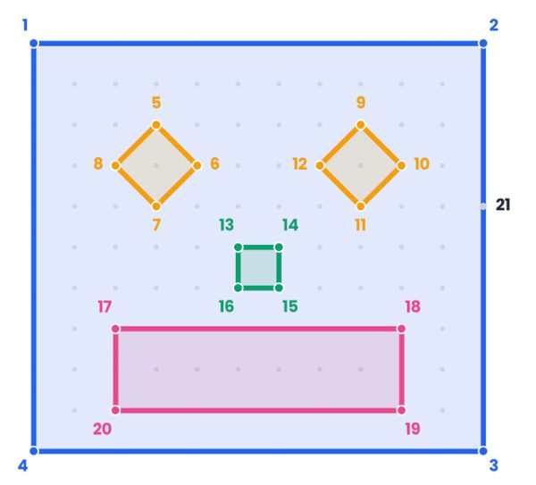
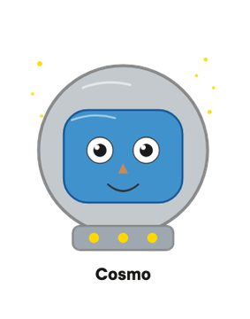
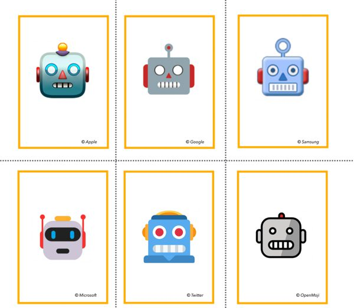

Enseigner l’IA · Module 1
Activités pour ta classe
Trois activités pour des élèves de 7 à 10 ans (4–6P). Choisis-en une : elle te guide pas à pas. Tu les retrouves aussi dans le catalogue général.

Robot dessine 1 · 20 min · 4–6P
Les élèves dessinent un robot en suivant un programme pas à pas, comparent leurs dessins, puis corrigent les instructions qui posent problème.
Voir l’activité
Robot dessine 2 · 25 min · 4–6P
Par deux, un élève joue le robot et dessine en suivant les instructions de son programmeur. Les dessins sont-ils identiques ? On débogue le programme.
Voir l’activité
Robot apprend à dessiner · 20 min · 4–6P
Sans instructions, cette fois : à partir d’exemples, les élèves repèrent ce que les robots ont en commun et en dessinent un nouveau, comme une machine qui apprend.
Voir l’activité